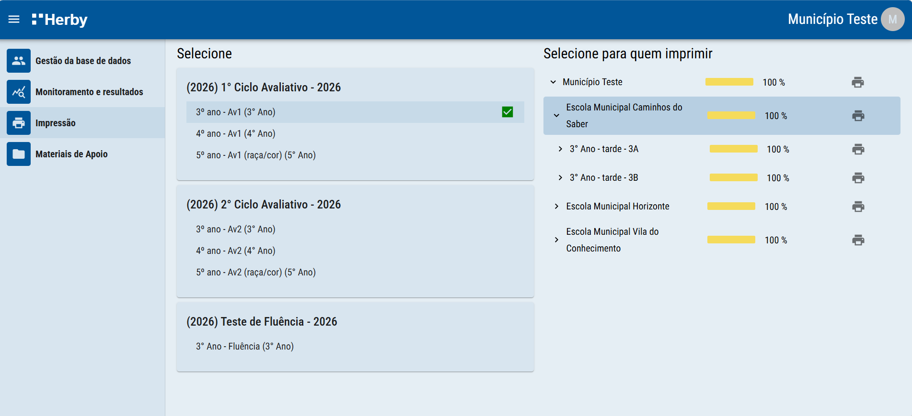

Impressão dos cartões de respostas pela plataforma, por escola, turma ou estudante.
Você pode imprimir os cartões de respostas de uma escola ou turma inteira ou até mesmo de um estudante específico. Para isso, basta selecionar a avaliação e, em seguida, a escola, turma ou o estudante desejado, clicando no ícone Impressora na linha correspondente. O arquivo PDF é gerado automaticamente.
